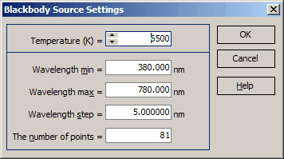

Blackbody Source Settings
Blackbody Spectrum Parameters:

The only parameter determining the blackbody spectrum is its Temperature (K).
Settings:
You can set the following parameters:
Wavelength Range:
Minimum Wavelength
Maximum Wavelength
Number of Spectral Points
Functionality:
When you adjust one parameter (e.g., wavelength range or number of spectral points), the other parameters will automatically update in correspondence.
Action:
Press OK to close this dialog and create the blackbody light source.